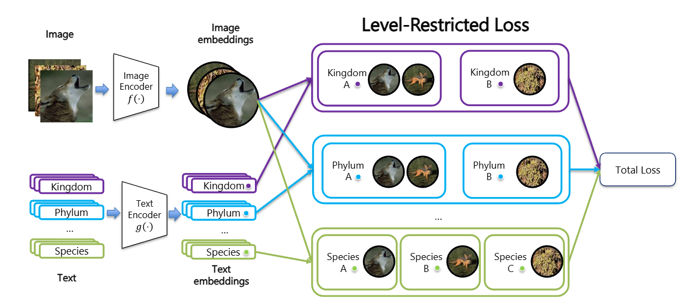

Education
M.S. in Electrical and Computer Engineering
The Ohio State University, Columbus, OH
B.S. in Information Security
Nanjing University of Posts and Telecommunications, China
Research Experience
Graduate Research Assistant
The Ohio State University
- Conducting research on a hierarchical hyperbolic vision-language model.
- Built large-scale dataset pipelines on OSC/PSC clusters for iNat21 and LILA datasets (200M+ samples).
- Deployed distributed training with PyTorch DDP, Slurm, and H100 GPUs; profiling using Nsight Systems.
Publications
CVPR 2026 FGVC Workshop
"Beyond Flat Labels: Level-Restricted Contrastive Learning for Hierarchical Fine-Grained Vision Classification."
Restricting contrastive comparisons to categories at the same taxonomic level to improve hierarchical consistency and accuracy in fine-grained vision-language classification.

View on arXiv →NeurIPS 2025 Workshop on Imageomics
"BeetleFlow: An Integrative Deep Learning Pipeline for Beetle Image Processing."
Contributed to data cleaning, curation, and experimental insights for large-scale beetle image datasets.
View on arXiv →Selected Projects
BioCLIP2
- Contributing to data cleaning (200M data).
- Project page →
Hierarchical Entailment Loss for CLIP
2025- Investigating entailment-aware losses for hierarchical vision-language learning.
- Working toward an implementation for fine-grained classification under taxonomy constraints.